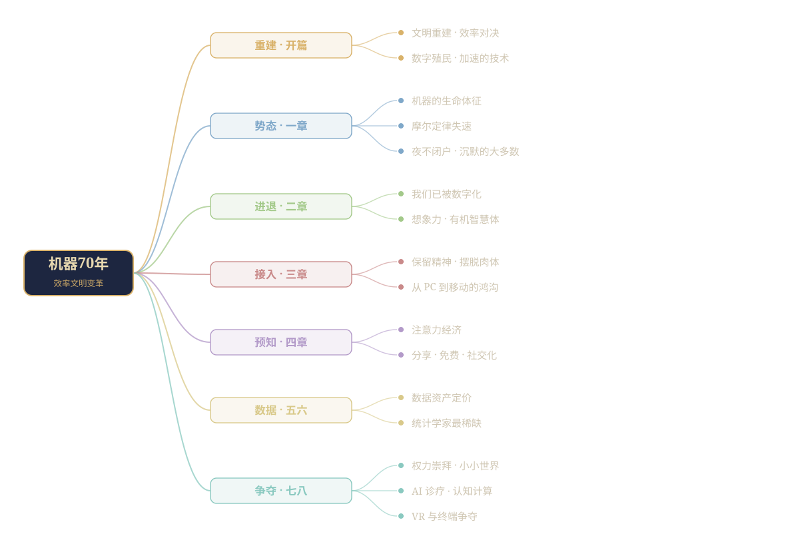

机器70年——互联网、大数据、人工智能带来的人类变革
〇 · 书籍信息
基本信息
| 书名 | 《机器70年——互联网、大数据、人工智能带来的人类变革》 |
|---|---|
| 作者 | 徐曦。全书以发现、解释和表达为顺序，梳理信息技术革命以来的社会变革，兼具人文关怀与技术史视野 |
| 出版 | 人民邮电出版社，2017年3月，ISBN 9787115443403；内容提要＋前言＋开篇章＋八章，全书约 17 万字 |
| 体裁 | 科技思想史读本。八章依次为：质疑（机器与摩尔定律）→ 势态（互联网势态）→ 进退（人机边界）→ 接入（注意力与分享经济）→ 预知（网络社会行为）→ 数据（大数据商业改造）→ 治理（互联网治理）→ 争夺（人类改造与AI之争） |
| 一句话 | 机器70年的本质是人类对效率的追求走到了拐点：数字化把人变成样本，互联网变成社会的有机智慧体，数据变成资产，人工智能变成劳动力——否认和对抗没有用，唯有让理性的力量跑在变革前面。 |
一 · 核心主题总览
全书十二章内容散而不乱，底层只讲六组概念。抓住它们，全书就能压成一张纸：
① 效率驱动与技术加速（全书的总起点）
人类每一次重大转折的出发点都是对效率的追求。技术进入指数增长阶段后，人类克服困难的能力也随之指数级增长——为期 15 年的人类基因组计划大部分工作在最后几年完成，还提前 2 年收工；测艾滋病毒基因用了 15 年，测非典病毒只用了 31 天。而承载这一切加速的摩尔定律终究只是个猜想：18～24 个月元件翻倍的曲线撞上了物理极限，但它代表的是「将美好科技瞬间带到眼前」的愿望。
② 互联网是个有机智慧体（社会的新基础设施）
互联网不是电气化时代的电灯，而是复杂程度逼近生命体的复杂机器。它短短数年就重建了整个社会的服务架构：从通信工具到信息平台，再到乔布斯把连接扩展到人本身。互联网是个有机智慧体——研究它不能只用还原论把它肢解，还要用整体论看待那 1+1＜2 的部分。它是世界上第一个同时具备「全民参与＋实时记录＋全球覆盖」三种属性的基础设施。
③ 数字化的人（个体变成样本与注意力经济）
在研究者眼中我们是一个样本，在互联网机器的眼中我们是无数相关联的数字的合集。数字化带来便利也带来副作用——「怎么证明你娘是你娘」这类荒诞问题正是数字化的产物。当信息不再稀缺，稀缺的变成注意力：如果你每天使用互联网也觉得时间不够用，说明你的注意力被消费了。注意力经济、分享经济、认知盈余，全都是这个转变的产物。
④ 数据革命（从生产资料到资产定价）
数据不会因发掘而枯竭，反而越用越值钱——它是经济学里的「非竞争性商品」。Facebook 上市当天 1040 亿美元市值与账面 63 亿美元之间 977 亿美元的差额，市场认可的正是其既有的数据量和未来产生数据的能力。数据资产终将计入财务报表并获得定价，那将是数据真正资产化的开始。
⑤ 智能的黎明（机器学习与复杂系统方法论）
从 1956 年达特茅斯会议到 2016 年 AlphaGo 战胜李世乭，人工智能在棋类对弈中完全超越人类；AI 对普通疾病的诊疗准确率几乎达到 85%，已可比肩中等医生。方法论上，复杂的系统由无数简单的系统组合而成——简单任务叠加出复杂智能，这一认识可以推及宏观经济、汽车制造与生物发育的任何领域。
⑥ 治理与争夺（规则、产权与人类的未来）
带着自由主义基因出生的互联网挑战了国家、边界与控制，治理焦点集中于知识产权、网络安全、内容监管与关键互联网资源四方面。而人类改造计划的路线之争——保留肉体改造肉体、还是摆脱肉体上传精神——最终落到机器人学三定律能否履行的追问。伴随老的机会消失，新的机会总是在不断出现；如果这一切无法避免，那我们应该规划更美好的未来。
二 · 开篇章 重建
全书的总纲。文明就是一场效率对决，计算机带来的挑战迫使人类在「效率优先」与「存在优先」之间重新选择。
一、文明重建和效率对决 · 漫长的白手起家
- 经典论述认为人之所以为人是因为能制造和使用工具；每一个人类历史的重大转折点都有新技术的出现，而这一切的出发点是人类对效率的追求。偶然学会用火让食物便于消化、大脑进化提速——效率是文明的底层密码。
- 科学和技术并不是一回事：源流不同、发展规律不同、发展路线也不同。科学延续希腊的思辨传统，技术优先考虑应用。19 世纪电力革命到 20 世纪信息技术革命，科学与技术互相攀附，才有了密集的创新。
- 1714 年英国国会悬赏 2 万英镑寻找海上经纬度测量法，钟表匠哈里森做出每日误差不到 2 秒的计时仪，83 岁生日那天才拿到奖金——大航海时代由此开启。技术悬赏制度是效率对决的历史注脚。
二、数字殖民 · 从技术加速到加速的技术
- 90 后（确切说是 95 后）是中国互联网第一代原住民：他们的生活、学习、工作全面被互联网覆盖，相信网络可以解决任何事情。相对而言，早期以工具心态接触互联网的一代人，感情完全不同。
- 互联网给了原住民太多直接面对结果的可能性，反而限制了他们对其他可能性的想象空间——一旦网络失灵就无所适从。图书馆的价值恰在于此：搜索引擎无法告诉你「你一无所知的事情」，随意浏览知识的过程在屏幕上无法完成。
- 1990 年人类基因组计划启动时预算 30 亿美元、预计 15 年；启动 10 年后质疑声仍很大，但技术指数增长的拐点一到，计划提前 2 年完成。科学家用 15 年完成艾滋病毒基因测序，对付非典病毒只用了 31 天。
三、工业4.0后机器与劳动力的博弈 · 遥远的成熟期
- 2016 年 8 月制造业 PMI 降至 49.7%，创 2012 年 8 月以来新低；德国提出工业 4.0 后中国迅速跟进「中国制造 2025」——机器与劳动力的零和博弈已经开场，GE 等公司把增长押注在清洁能源、医疗、航空、工业互联网上。
- 核心追问：人类是设置：效率优先还是存在优先？自动化提高效率的同时消灭岗位，制造业升级的动力与劳动力人口问题构成一组必须同时求解的方程。
- 作者的结论并不悲观但足够清醒：机器替代的成熟期还很遥远，但方向不可逆——留给个人与社会的时间窗口，正是这本书要帮读者看清的。
三 · 第一章 质疑
质疑的对象包括机器本身：摩尔定律只是猜想，互联网不是可靠的公共事业，网络民意也不是真实的民意。
一、机器的生命体征
- 从 1956 年亚瑟·塞缪尔让计算机跟他对弈、1962 年战胜康涅狄克州象棋冠军，到 2016 年 AlphaGo 战胜李世乭——机器学习从「手把手教」进化到「自我对弈进化」，机器第一次有了「生命体征」。
- 网络把计算机整合为终端：存储和计算都搬到线上，本地设备小型化，主机与终端频繁的数据交换最终促成了大数据的快速崛起——而这些数据大多数是个人数据。
二、失速的摩尔定律
- 1965 年戈登·摩尔在《电子学》杂志预言晶体管数量每年翻倍，后修正为 18～24 个月翻倍。但摩尔定律只是个预言或猜想，并非定律——对折 50 次的纸的高度接近地球到太阳的距离，芯片制程不可能无限翻番。
- 由摩尔定律推导出安迪——比尔定理：What Andy gives, Bill takes away——英特尔提高算力，微软的软件就吃掉算力，用户被迫升级设备，带动整个行业的团体性增长。跑得太快和太慢的都容易被淘汰并拖垮整个行业。
- 摩尔定律失速后科技并不会停滞：作者借用「被埋在玩具堆里的孩子」作结——他在一堆玩具中间总有玩具可以玩，光学计算、量子计算、比特科学还能加速。
三、夜不闭户 · 沉默的大多数
- 云计算时代个人一旦登录网络就变成透明人：如果互联网有人类意识，那它将是世界上最了解我们的人——名字、电话、住址、行动路线、收入、婚姻、情绪、爱好，全被一个个标签记录下来。
- 社会工程学（凯文·米特尼克《欺骗的艺术》）利用人性弱点实施心理战，本质是信息收集与利用——它不是技术问题，而是管理机制问题。个人信息的四大类泄露源中，手机与电商 APP 是重灾区。
- 隐私权的核心意义是「独处的权利」（19 世纪末《哈佛法律评论》），至今已有 90 多个国家立法保护。结论一句：既然我们已经不得不「夜不闭户」，那唯一的选择就是建设安全社区。
- 网络民意与真实民意之间有巨大距离：群体极化容易滋生极端观点，社交媒体圈定了无数持有特殊意见的圈子——如今是人类历史上煽动性言论生产最多、传播范围最广的时代。在互联网公开民主的表面下，是广大网民的沉默和不知所措。
四、年轻人的崛起与社交网络对传播的全面改变
- 引费孝通《乡土中国》：「从基层上看去，中国社会是乡土性的。」乡下人与土地绑定、缺乏流动能力、生于斯死于斯——对照之下，互联网一代是史上流动性最强的「新乡土」，熟人社会被算法陌生人社会取代。
- 从博客到社交网络再到微博，每条信息的字数越来越少、传播能力越来越强：人们正在习惯一种网络式、数据库式和寒暄式的交流——「点赞之交」这种高频浅层联系还在被进一步稀释。
- 社交网络把传播结构从「中心—大众」改写为「节点—网络」，年轻人的崛起不只是年龄现象，而是传播权力结构的更替。
四 · 第二章 势态
互联网的势态：一场停不下来的革命，把人数字化、把生意变成信息生意、把网络变成有机智慧体。
一、停不下来的革命 · 从效率工具到弥漫的空气
- 数千年前的工具延伸了人的能力，300 年前的工业革命让能源成为动力，50 年前开始的信息革命给出更多可能——微型计算机、移动设备、可穿戴设备、自动驾驶汽车、机器人，全是信息革命的副产品。
- 互联网正从效率工具变成弥漫的空气：它不再是「用」的对象，而是生存的背景。按照原来的方式生活，必然会带来多方面的不适和多层次的损失。
- 90 年代末的硅谷泡沫画像：注册一个域名就可以跟投资人谈上市计划，「18 个月上市计划」由此而来；超级碗数百万美元的广告被未盈利的互联网公司买下——泡沫与革命从来一起到来。
二、我们已被数字化
- 个人的数字化随各学科发展不断完善：某人，男，22 岁，身高 175 厘米，体重 65 公斤，月薪 5000 元——一个数字画像就有起码的轮廓；智力、性格、心灵感知还能用量表继续补充。
- 在研究者眼中，我们是一个样本；在互联网机器的眼中，我们是无数相关联的数字的合集。「怎么证明你娘是你娘」正是数字化的副作用：分娩时间、年龄差、身份证轨迹、血型遗传、DNA 匹配度、银行往来、手机定位——但这一切只能证明强相关性，而非母子关系。
- 作者的警句：作为进化几百万年的人，几乎失去了像人一样思考的能力——要避免因为数字化和机器语言的聒噪，问出愚蠢的问题。
三、想象力比知识更重要
- 人工智能这个词造得非常好：机器的智能是人工制造出来的，区别于人。机器可以很聪明，能主动学习、积极思考，但机器永远不能拥有人的智力，它缺乏的恰恰是人最重要的改变世界的能力——想象力。
- 想象力成为稀缺资源：比特技术能以想象构建一个新世界——这是人对机器的最后防线，也是职业规划的指南针。
- 网络世界充斥着数学的逻辑：一切都被建模、被计算、被优化；而人之为人的部分恰恰在数学之外。
四、有机智慧体 · 最了不起的生意 · 基础设施
- 互联网是个有机智慧体：它像生命体一样生长——从只满足通信需求，到万维网满足信息存储交换，再到移动互联网把连接扩展到人本身。每一次跨越都是量变到质变的升华。
- 信息自古就是一门生意：指路收费的乡人是最早的信息商人。今天这门生意被无限放大——作者的学弟在华尔街投行与 Facebook「卖广告」之间选择，为什么这个时代最好的脑袋都在参与卖广告？因为现在这是一门大生意。
- 「基础设施」在书中作形容词使用，意思是翻天覆地。乔布斯的常识感：苹果的设备终究是要拿去填海的，而皮克斯做的东西会成为永恒——信息作为无形产品同样需要确权和保护。
- 从虚拟到模仿真实：宗教对神域的想象是人类最早的虚拟现实——一切虚拟的起点都是现实。
五 · 第三章 进退
人与机器的边界：肉体是否过期、技术迷信如何破除、盲人细杆式的迭代方法论。
一、保留精神，摆脱肉体
- 精神和肉体的幻灭与升华本是宗教范畴的问题，如今科学和宗教在这一刻又走到了一起。澳大利亚艺术家 Stelarc 用 13 年 27 次「悬挂」表演表达对身体的不屑，「第三只手」用腹部肌肉生物电控制——卡内基梅隆大学因此授予他艺术与机器人学荣誉教授职位。
- Stelarc 的广告词「人类的身体已经过期（The human body is obsolete）」至今充满哲学迷思：信息爆炸让观看时间逼近眼睛的使用极限，先是眼睛过载，再是精力过载，最后是大脑处理能力过载——肉体的设计在飞驰的技术社会面前屡现疲态。
- 但我们缺少的其实是高效摄入信息的机体：没有高效的信息输入，大脑这样的运算设备只能资源闲置，闲置就等于退化。
二、「盲目」之下的技术迷信
- 面对互联网这个完全不可知的世界，我们如盲人前行：先确定方向（战略），再拿一根长度合适的细杆高频敲打地面——「迭代」的本质就是盲人细杆：小步快跑，迅速确定安全区域并马上跟进，以此为基点确定下一个落脚点。
- 作者以身说法：2008 年做的送餐网站「觅食巴士」死于把杆儿放得太长——止步于移动互联网浪潮的前夕。反面教材的教训：迭代周期必须短到能撑到浪潮真正到来。
- 本段以「解放思想，实事求是」收束共勉——世界已是新的，人也该是新人，面对新佛念的却是旧经，佛爷如何高兴得起来。
三、规则的肩膀与从 PC 到移动的数字鸿沟
- 互联网确认了基于统计原则的社会形成：大数定律取代个案经验，世界站在了规则的肩膀上——统计规律成为新世界的运行法则。
- 从 PC 到移动的数字鸿沟不是设备之别而是生存方式之别：2007 年 iPhone 发布、2008 年 SDK 开放，三年后移动互联网真正兴起——鸿沟两边的人，连信息获取的姿势都不同。
- 大脑和机器的对接：脑机接口让「摆脱肉体」从艺术实验走向工程问题，人机边界成为本书此后所有章节的隐线。
六 · 第四章 接入
接入即被消费：注意力经济、分享经济与免费生意，是互联网商业引擎的三个冲程。
一、快速发展的注意力经济
- 所有经济行为都在解决短缺：信息曾经稀缺，如今百亿规模网页一个人几秒一页也要读数百年——信息需要被人看到，成为每一个信息生产者的强烈愿望；不给信息提供平台，它沉没的速度将超过以往任何时期。
- 作者自注式金句：如果你每天使用互联网，也觉得时间不够用，那说明你的注意力被消费了——注意力成为稀缺资源，是一切免费商业模式的前提。
二、从独享到分享 · 从分享到免费
- 独享与分享的界限是富足性：贫乏时独享（中东的淡水、尼罗河下游密集的水利工程），富足时分享。互联网让信息一步跨入富足——保存是对稀缺资源的态度，现在我们不再把资料存到本地硬盘。
- 分享经济需要资源的富足，这是个大前提：Uber 从拼车切入是因为汽车在一线城市富足到可以被分享；Airbnb 没有 Uber 成功，因为住是极度个性化的需求而行可以标准化——衣食住行四项中只有行可以服务标准化。
- Information wants free（信息趋于免费）：免费向上回溯是分享的兴盛，分享的动力是个人参与——克莱·舍基《认知盈余》提出前提，真正的动力来自心理驱动，知乎的成功即是例证。高尚的原因是高尚本身。
三、商业引擎 · 信息的社交化
- 从信息驱动到沟通驱动：网络的意义从信息检索转向人际沟通，商业引擎随之换挡——广告不再购买版面，而是购买关系链。
- 信息的社交化带来了寒暄式交流：点赞者想表达什么已难以说清（赞同？欣赏？还是已阅览？），但这种含混不清的表达确实起到了社交联系的作用——「点赞之交」还会被进一步稀释，稀释成何种形态仍不可知。
- 个人关系网的维护取代了实质交流：人们不再就内容本身苦苦思考，取而代之的是内容如何激活关系网的活跃。
七 · 第五章 预知
网络社会的行为学：权力崇拜、小小世界、合作的博弈、「听话」的经验危机——互联网如何改写集体决策。
一、互联网加速了权力崇拜 · 小小世界
- 从社会、政治、文化角度探讨互联网：它加速了权力崇拜——权力在网络上被更高效地聚集、展示与模仿。
- 技术让人与人的沟通便捷，让世界变小；但技术毕竟是冷冰冰的东西，便利性发展的同时，人与人之间的温馨体验变得干巴巴。作者看到瘦弱美女牵着精壮大狗时想的问题是——谁在牵着谁？人牵狗还是技术牵人，这一问是全章的题眼。
二、决策和影响集体的建议 · 合作的意义
- 个体只是在外部环境的激励和约束中被动做出决策；但个体间的互动能让每一个主动选择变成改善整个社会环境的最小因子。作者设计了一个「总股值恒定」的股票模型：参与者要变成少数派才能赚钱——多数派博弈的社会学版本。
- 合作被互联网重新审视：交易成本骤降让陌生人协作成为可能，集体的边界从熟人圈扩展到全球节点网络。
- 体系中的原体如何追逐互动：用户是数据的原体，互动是价值的来源——这条逻辑在第六章将直接折算成 977 亿美元。
三、网络时代「听话」意味着什么 · 线上的前现代社会
- 几千年来人们靠几代人总结验证的经验完成社会化训练；但互联网把少数人未经验证的信息极力放大，周围被一种声音塞满——我们都是经验的奴隶，以前我们为奴还能看清前路，现在我们为奴确实更加方便了。「听话」的前提正在崩塌。
- 网络世界 1+1＜2 的原理：整体论对还原论——互联网是复杂程度逼近生命体的复杂机器，无法用模拟实验还原；还原论能找到细微的突破口，但宏观上是对系统的肢解。伯纳斯-李的万维网与乔布斯的移动互联网，都是回归原点重新思考整体价值的整体论胜利。
- 一个线上的前现代社会：钱江晚报 16 岁女孩 80 万遗产引发全村躁动的故事——熟人社会的道德经济在网上复活；网络空间不是现代社会，而是把前现代的人情、面子、舆论搬到线上放大。
八 · 第六章 数据
全书分量最重的一章：数据如何改变研究方式、改造商业、获得定价——数据资产的经济学。
一、物理世界和信息世界的闸门 · 大数据改变研究方式
- 大数据是我们对世界进行信息化改造的关键步骤：它不仅可以掌握过去，还可以预测未来——决策、选择与世界观都受到前所未有的挑战。
- 研究方式的改变以搜索为例：百度在国内市场份额约 85%，其数据几乎可看作全国搜索行为的全样本；2015 年娱乐内容和电商信息的搜索量达到三分之一——只要按比例抽取数据，仔细分析全样本的 0.1%，最后的结果也是准确的。
- 数据是世界语言：不同维度之间的数据相关性让商家获得别人看不到的商机——某种气象变化会带动某种商品的销量。
二、大数据对商业的改造
- 数据分析师和数学家将成为营销人员和创意人员的战友。Google 董事长施密特一针见血：除非你是上帝，否则任何人都必须拿数据说话——这是数据时代最有力的提示和警醒。
- 数据的价值不会随着开发而缩水，反而随处理和分析不断扩大——数据具有经济学中「非竞争性商品」的特征，若在法律和伦理框架内界定，将来应属最重要的「公共物品」。
- 数据的价值就像海上的冰山，我们当前看到的只是冰山一角：美国海洋学家莫里从沉积的航海图和航海日志中发现洋流；Google 用关键词搜索数据对全球流感进行预警——创新让人们不断找到数据的新价值点。
三、数据到底应该「值多少钱」 · 最不可替代的人和最稀缺的资源
- 2012 年 Facebook 上市：账面市值约 63 亿美元，上市当天达到 1040 亿美元——977 亿美元的差额，市场认可的其实是 Facebook 既有的数据量和未来产生数据的能力：公司无形资产完全由数据补充，用户是产生数据的原体。
- 数据资产现在还无法计入传统的财务报表，但未来一定会找到记录在表的方法——那时就是数据真正获得定价和资产化的开始。
- 最稀缺的资源：麦肯锡的答案是数据科学家，Google 首席经济学家哈尔·范瑞安的答案是统计学家——「数据非常多且非常重要，但真正缺少的是从数据中提取价值的能力」。
- 《点球成金》的启示：老球探凭感受选球员，比利·比恩用数据分析带队拿下 2002 年美联西区冠军并取得 20 场连胜——各行各业专家的经验都将受到统计学家所引数据的考验；大数据先锋往往不来自他们做出贡献的领域。
九 · 第七章 治理
自由的代价与规则的重建：知识产权、网络安全、内容监管、关键互联网资源——互联网治理的四大战场。
一、争论中的互联网治理 · 从蛮荒到制度化
- 治理变革的焦点集中于知识产权保护、网络安全、内容监管及关键互联网资源四个方面：带着自由主义基因出生的互联网，其开放能力挑战了国家、挑战了边界、挑战了控制。
- 从蛮荒到制度化：每当严重冲突出现，互联网灵活自由的基因总能高效找到框定条件下的解决方案——治理不是扼杀自由，而是给自由划定可持续的边界。
- 互联网是否有罪：平台责任、言论边界、各国禁忌不同——美国不禁纳粹言论，德法比奥波等国却严格禁止；互联网尽管连接全球，仍需要服从当地的禁忌和规定。
二、IP：互联网协议和知识产权
- 文特·瑟夫——TCP/IP 协议与互联网基础体系结构的设计者——在 T 恤上写「IP is everything（IP就是一切）」：对互联网之父是协议（Internet Protocol），对律师、小说家、设计师是知识产权（Intellectual Property）——两者被互联网强行拽到一起，碰撞出整个互联网世界的第一个争夺点。
- 数字复制的难题：电子书稿在传输中被服务器随机复制，财产在我们不知情、没有从手上消失的情况下被复制千万次，成本几乎为零但利润巨大——信息一旦上网就再也不会消失，数字化使依赖多年的著作权法律变得无能为力。
- 复制文化和烧制文化流行起来，人性不劳而获的一面被便捷的分享工具激发——更大的后果是对人类进步和探索积极性的挫伤。
三、安全 · 监管 · 治理边界
- 直到此刻我们才会注意安全：关键互联网资源（CIR）成为各国争夺的核心资源，严重牵制国家发展互联网的能力与安全性——多边合作与对话是唯一出路。
- 「不该看的不看」：《国语·周语上》讲「防民之口，甚于防川」——对言论的警惕贯穿整个文明史；超大型国家所有管控和治理的前提都是维护国家根本利益。
- 捍卫公共利益 · 治理边界的探讨：从「ISIS成员行动安全手册」到 3K 党长袍与医生白大褂的对比实验、路西法效应实验——人受场景和社会暗示的影响，负面文化的网站催生更多敌对行为，积极文化催生正面行为。治理的杠杆是环境设计，而非逐一封堵。
十 · 第八章 争夺
全书的收束：人类改造计划的路线之争、VR/AR 的想象边界、AI 的理想与机会，以及 AlphaGo 留下的思考。
一、人类改造计划的路线之争
- 人类作为自然界中各项能力都不突出的物种需要被改造：更好的听力、更敏锐的嗅觉、更强的体魄——超级物种改造计划分出两个方向的实践：改造肉体与摆脱肉体。
- 钢铁侠和绿巨人为什么有时候还要打来打去？——这是人类在实现能力延伸时的选择问题：技术路线之争的背后是价值观之争。
二、技术和想象如何塑造虚拟世界 · VR/AR 的诸多误解
- 对虚拟技术的误解集中在「逃避现实」：实际上从宗教神域到帕特农神庙，人类一直在模仿真实——虚拟体验的所有想象，起点都是现实。
- 迪斯尼 Magic Band 手环的启示：在 120 多平方公里的园区内实现通行证与支付功能，靠的是封闭管控——迪斯尼代表了互联网文化的反面：在分享、公开、UGC 的互联网面前坚决走高度管控路线。有一套自成一体又独立隔绝的系统，才能实现精美的体验；这也解释了迪斯尼为何能与苹果走到一起——设计哲学相同。
- 从 Google Cardboard VR 设计则例解读出的不确定性：低成本方案降低了门槛，也降低了体验的上限——虚拟体验的边界由硬件、内容与管控三者共同决定。
三、AI：理想 · 机会 · AlphaGo 的深不可测
- AI 的理想与机会：1956 年达特茅斯会议确定了 AI 这个术语与核心问题（自然语言编程、模拟神经元、经验学习、信息表达、随机性与智能的关系）；研究随后分成三个方向，传统 AI 自上而下复制大脑，布鲁克斯启发的自下而上路径让简单反应系统叠加出智能。
- AI 已遍及生活的诸多方面：电影后期制作几十人即可完成、交通信号灯实时调控、滴滴与 Uber 的大数据出行方案；医学上AI 对普通疾病的诊疗准确率几乎达到 85%，已可比肩中等医生，IBM 沃森以认知计算模式为患者提供治疗方案；达芬奇手术机器人让主刀医师通过三维视觉系统与机械臂完成手术，未来可跨越地理界线共享全球医疗资源。
- AlphaGo 的深不可测：它似乎从来没有露出它的最强实力，总是比对手强一点点——赢业余研究员几个子、赢专业二段几个子、赢退役九段几个子、赢李世乭也只赢几个子。核心是两套神经网络：策略网络负责减少搜索宽度（摒弃昏招），价值网络负责减少搜索深度（抛弃劣势路线）。1997 年深蓝胜卡斯帕罗夫，2016 年 AlphaGo 胜李世乭——人工智能在棋类对弈中完全超越人类，当年 7 月 AlphaGo 在世界职业围棋排名超过柯洁位列第一。
- 复杂系统的方法论总结：复杂的系统是由无数简单的系统组成的，反过来，简单的系统只要按照一定规则组合起来，就能创造复杂系统——宏观经济由无数单笔交易组成，生物发育由基因与蛋白质细胞相互作用塑造，ABM 模型可以对一系列复杂系统建模研究。
- 机器人学三定律的追问：阿西莫夫三定律今天只有第二条可以履行，第一条和第三条都难以履行——DARPA 的战场机器人以杀伤为目的，严格按三定律制造则「投入人类士兵即可不战而屈人之兵」。全书最后一段落在希望上：伴随老的机会消失，新的机会总是在不断出现——汽车出现后马确实显得多余，但如果这一切无法避免，那我们应该规划更美好的未来。
十一 · 名段欣赏—— 原文精读 · 逐段赏析 ——
十二 · 金句摘录—— 40 条 · 带出处 ——
"让理性的力量战胜我们内心习惯性的否认和对抗。"—— 前言
"机器与人类、虚拟与现实区别的模糊化已经变得非常明显。"—— 前言
"我们并不知道接下来会发生什么，更现实的做法是了解正在发生的和过去发生过什么。"—— 前言
"『机器70年』或许只代表一个已经发生的事实，我们更希望的是，以这个事实为起点，摸索发展的轨迹，开启未来的方向。"—— 前言（书名释义）
"每一个人类历史的重大转折点都有新技术的出现，而这一切的出发点就是人类对效率的追求。"—— 开篇章 · 文明重建和效率对决
"科学和技术并不是一回事。它们的源流不同，发展规律不同，发展路线也不同。"—— 开篇章 · 文明重建和效率对决
"人类基因组计划的大部分工作都在最后几年完成，而且整个计划还能比预期的时间提前2年完成。"—— 开篇章 · 从技术加速到加速的技术
"科学家曾经用了15年时间完成对艾滋病毒的基因测序，而对付非典病毒只用了31天。"—— 开篇章 · 从技术加速到加速的技术
"摩尔定律却只是个预言或者叫猜想，尽管它预言了在随后的几十年中集成电路行业的发展。"—— 第一章 · 失速的摩尔定律
"What Andy gives, Bill takes away（安迪带来的会被比尔带走）。"—— 第一章 · 失速的摩尔定律（安迪——比尔定理）
"不要为他担心，他在一堆玩具中间，总有玩具可以玩。"—— 第一章 · 失速的摩尔定律（论技术未来）
"个人一旦登录网络，就会变成一个透明人。如果互联网有人类意识，那它将是世界上最了解我们的人。"—— 第一章 · 夜不闭户
"既然我们已经不得不『夜不闭户』，那唯一的选择就是建设安全社区。"—— 第一章 · 夜不闭户
"网络民意与真实的民意之间有巨大距离。"—— 第一章 · 沉默的大多数
"如今，可以说是人类历史上煽动性言论生产最多、传播范围最广的时代。"—— 第一章 · 沉默的大多数
"互联网没有反映我们真实的社会，也不可能做到真实。"—— 第一章 · 沉默的大多数
"从基层上看去，中国社会是乡土性的。"—— 费孝通《乡土中国》，转引自第一章 · 年轻人的崛起
"在研究者眼中，我们是一个样本；在互联网机器的眼中，我们是无数相关联的数字的合集。"—— 第二章 · 我们已被数字化
"机器永远不能拥有人的智力，它缺乏的恰恰是人最重要的改变世界的能力——想象力。"—— 第二章 · 想象力比知识更重要
"人类的身体已经过期（The human body is obsolete）。"—— Stelarc 广告词，转引自第三章 · 保留精神，摆脱肉体
"世界既然已是新的，人也该是新人，面对新佛念的却是旧经，佛爷如何高兴得起来。"—— 第三章 · 『盲目』之下的技术迷信
"解放思想，实事求是。"—— 第三章 · 『盲目』之下的技术迷信（结尾共勉）
"如果你每天使用互联网，也觉得时间不够用，那说明你的注意力被消费了。"—— 作者，第四章 · 快速发展的注意力经济
"分享经济需要资源的富足，这是个大前提。"—— 第四章 · 从独享到分享
"Information wants free（信息趋于免费）。"—— 第四章 · 从分享到免费
"高尚的原因是高尚本身。"—— 第四章 · 从分享到免费
"这种高频的、浅层的联系被戏称为『点赞之交』。"—— 第四章 · 信息的社交化
"技术让人与人的沟通便捷，让世界变小。但技术毕竟是冷冰冰的东西。"—— 第五章 · 小小世界，没有烦恼
"我们都是经验的奴隶，以前我们为奴还能看清前路，现在我们为奴确实更加方便了。"—— 第五章 · 网络时代『听话』意味着什么
"除非你是上帝，否则任何人都必须拿数据说话。"—— 埃里克·施密特，转引自第六章 · 大数据对商业的改造
"数据的价值就像海上的冰山，我们当前看到的只是冰山一角。"—— 第六章 · 数据到底应该『值多少钱』
"数据资产现在还无法计入传统的财务报表，但人们并不能忽略这个事实的存在。"—— 第六章 · 数据到底应该『值多少钱』
"数据非常多且非常重要，但真正缺少的是从数据中提取价值的能力。"—— 哈尔·范瑞安，转引自第六章 · 最不可替代的人和最稀缺的资源
"信息一旦上网就再也不会消失。"—— 第七章 · IP：互联网协议和知识产权
"IP is everything（IP就是一切）。"—— 文特·瑟夫 T 恤语，第七章 · IP：互联网协议和知识产权
"防民之口，甚于防川。"—— 《国语·周语上》，转引自第七章 · 不该看的不看
"复杂的系统是由无数简单的系统组成的，反过来，简单的系统只要按照一定规则组合起来，就能创造复杂系统。"—— 第八章 · 人工智能（AI）的理想
"当前人工智能对普通疾病的诊疗准确率几乎达到85%，已经可以比肩中等医生的水平。"—— 第八章 · 人工智能（AI）的机会
"Alpha Go似乎从来没有露出它的最强实力，总是比对手强一点点。"—— 第八章 · 围绕AlphaGo我们还能想到些什么
"伴随老的机会消失，新的机会总是在不断出现。如果这一切无法避免，那我们应该规划更美好的未来。"—— 第八章 · 围绕AlphaGo我们还能想到些什么（全书末段）
十三 · 拓展阅读—— 佐证与延伸 · 外部资源 ——
书中技术史的诸多论断可在下列外部资源中交叉验证与延伸。按「概念 → 技术 → 事件 → 延伸」排列。
十四 · 个人感悟与心得
读《机器70年》：四点心得
其一，977 亿美元的差额，就是数据从业者下一个十年的考题。全书对经验主义者杀伤力最大的是第六章那道算术题：Facebook 账面市值 63 亿美元，上市当天 1040 亿美元，差额 977 亿——市场认可的既不是厂房也不是品牌，而是「既有的数据量和未来产生数据的能力」。作者随后补了一刀：数据资产现在还无法计入传统财务报表，但未来一定会找到记录在表的方法。这正是资产评估与统计建模的交叉地带：数据的「账目价值」（基础目的价值）与「市场价值」（所有可能应用的价值综合）之差，本质是一道久期极长、增长极不确定的现金流折现题——谁先给出数据资产的可复测定价框架，谁就站在下一个估值风口的入口。可落地的第一步：选一家数据密集型公司，用「用户数 × 单用户数据价值 × 贴现」搭一个三要素模型，把书里的定性判断跑成定量练习。
其二，最稀缺的资源是统计学家——这句话靠统计吃饭的人不该只当表扬听。第六章引哈尔·范瑞安：「数据非常多且非常重要，但真正缺少的是从数据中提取价值的能力。」麦肯锡给的是「数据科学家」，范瑞安给的是「统计学家」——两个答案合起来，恰好是数据从业者的本职画像：本来就是「用统计从数据中提取价值」的人，只是提取的场景常常被锁在自己的行业边界内。书里《点球成金》的案例点破了迁移的路径：老球探输给数据分析师，不是因为不懂球，而是因为从不校准自己的经验判断。数据从业者的护城河不在「懂某个行业」，而在「懂校准」——把校准的方法论带到任何数据密集的行业（健康科技、车联网定价、气候风险），护城河就跟着走。下一步动作：把自己手上的经验假设清单列出来，逐条标注「上一次用数据验证是什么时候」，超过三年的就是待清理的存量风险。
其三，AI 诊疗准确率 85%，传统行业的 AI 落地不必等完美再动手。第八章给了两个可对标的事实：AI 对普通疾病的诊疗准确率几乎达到 85%、已可比肩中等医生；沃森靠认知计算读医学文献与临床记录提供治疗方案。这两个事实对任何传统行业的意义不在「取代专家」，而在重新划定「机器初审 + 人工复核」的成本线：85% 的准确率意味着大部分标准件可以机审、疑难件转人工，人力从「看所有件」变成「看被机器筛出的 15%」。人在这条链路上的位置是明确的——定机审规则、算误判成本、定人工兜底的触发阈值，并持续用实际结果回测模型。顺带用书中 AlphaGo 的观察自勉：机器总是比对手强一点点，靠的是策略网络砍掉昏招、价值网络砍掉死路——任何运营的降本增效，做的正是同样两件事：减少错误动作，减少无效深挖。
其四，「我们都是经验的奴隶」——建模的人也要防这句话。第五章这句自嘲值得每个建模者贴在屏幕边：以前为奴还能看清前路，现在为奴反而更舒适了——因为机器把经验包装得越来越顺滑。书中给出的解药是复杂系统方法论：复杂的系统由无数简单的系统组成，简单系统按规则组合就能创造复杂系统；这恰是复杂模型的结构真理——监管规则、风险准备、巨灾模型，全都是「简单模块的可控叠加」，没有哪个模块允许黑箱。同时要警惕还原论的陷阱：把互联网肢解成零件能修bug，却理解不了网络本身；把客户肢解成风险因子能定价，却理解不了行为本身。模型之外永远留一层整体论的审视：整体不是部件之和，那差出来的部分，就是下一次经验击穿的藏身处。
一句话收束：这本书表面上写机器，骨子里写的是「经验」二字的贬值与「校准」二字的升值——摩尔定律失速了，指数增长没停；经验假设好用了，校准责任更重了。机器70年教会我们的最后一课：别做经验的奴隶，做经验的校准者。
十五 · 一页速查（复习用）
| 全书框架 | 开篇·重建（效率对决）→ 一·质疑（机器与摩尔定律）→ 二·势态（互联网势态）→ 三·进退（人机边界）→ 四·接入（注意力与分享经济）→ 五·预知（网络社会行为）→ 六·数据（数据资产）→ 七·治理（规则与产权）→ 八·争夺（人类改造与 AI） |
|---|---|
| 核心概念 | 摩尔定律（18～24 个月翻倍，只是猜想）／安迪——比尔定理（安迪给的被比尔拿走）／注意力经济（信息富足后注意力稀缺）／认知盈余（克莱·舍基）／非竞争性商品（数据越用越值钱）／群体极化／社会工程学（信息收集型骗术）／复杂系统（简单系统组合创造复杂） |
| 关键数字 | 70 年（机器变革历程）／2017.3（出版）／85%（百度搜索份额≈全样本；AI 诊疗准确率≈中等医生）／977 亿美元（Facebook 数据资产差额）／31 天（非病毒测序 vs 艾滋病 15 年）／4 年（移动约车改变出行习惯） |
| 数据观 | 数据不会枯竭、越用越增值→公共物品→账面价值 vs 市场价值之差=数据资产→暂不入表、终将定价→稀缺资源是数据科学家与统计学家→行业专家经验须经数据校验（点球成金） |
| 治理四焦点 | 知识产权保护／网络安全／内容监管／关键互联网资源（CIR）——「IP is everything」的双关是第一争夺点 |
| AI 脉络 | 1956 达特茅斯会议定名 AI → 1997 深蓝胜卡斯帕罗夫 → 2016 AlphaGo 胜李世乭（策略网络减宽度＋价值网络减深度）→ 7 月排名超柯洁——「总是比对手强一点点」 |
| 人机边界 | 机器能学能算，缺的是想象力与「知道自己在于什么」；肉体或将过期（Stelarc），意识上传仍是路线之争；机器人三定律仅第二条可履行 |
| 一句话总结 | 让理性的力量战胜习惯性的否认和对抗——别做经验的奴隶，做经验的校准者。 |
十六 · 全书思维导图—— 一图纵览 ——

一图纵览全书骨架 · 手机端可左右滑动查看全图